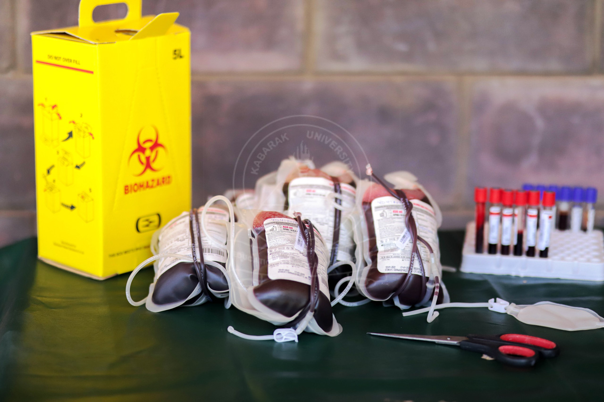
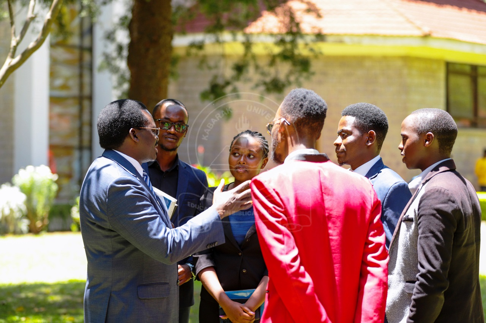

KABARAK UNIIVERSITY COMMUNITY CHAPEL WEBSITE
I was among the team of developers that took part in building and upgrading the universities website to a better looking page and specifically the gallery page

SIMPLE BLOOD DONORS MANAGEMENT SYSTEM
during my final year project i managed to develop a simple blood donors management system that was able to help proove my understanding of the class work concept and display my problem solving skills in the modern society using technology

As part of my team project i managed to collaborate with other three students where we came up with an idea of developing a students chat bot